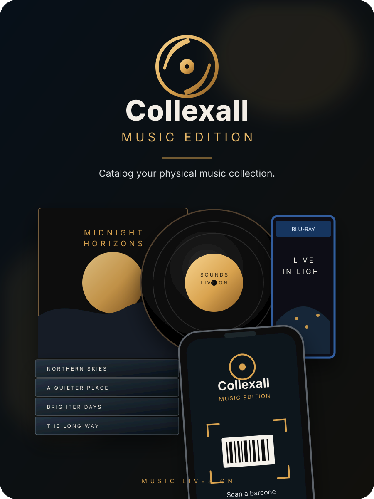
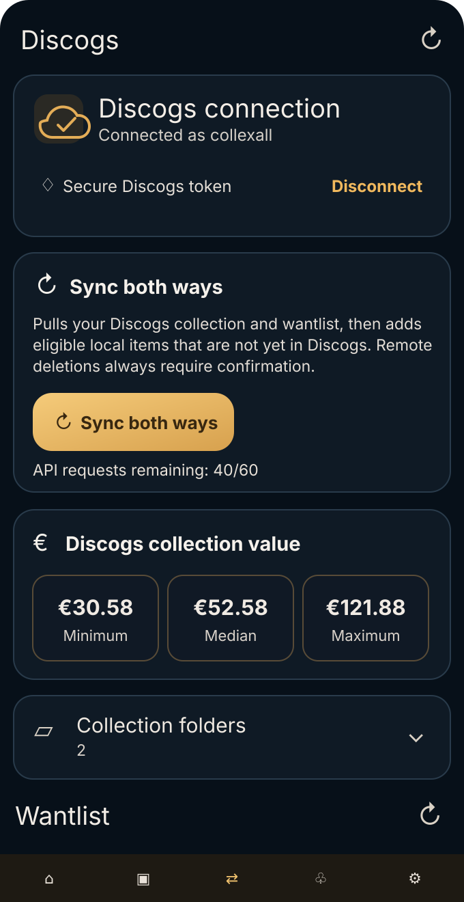

Português
A aplicação está integralmente disponível em Português.
The website is currently presented in English, but the Android app is fully localized in all ten languages below.
A aplicação está integralmente disponível em Português.
The app is fully available in English.
La aplicación está disponible íntegramente en español.
L’application est entièrement disponible en français.
Die App ist vollständig auf Deutsch verfügbar.
L’app è interamente disponibile in italiano.
De app is volledig beschikbaar in het Nederlands.
Aplikacja jest w pełni dostępna w języku polskim.
Appen är helt tillgänglig på svenska.
Aplikace je kompletně dostupná v češtině.
Catalog CDs, vinyl, music DVDs and Blu-rays. Scan barcodes, search Discogs, track value, locations, favourites and loans — while keeping your collection available offline.

Fast when you are cataloguing. Detailed when you want to analyse. Flexible when your collection gets serious.
Scan physical releases with your phone camera and identify editions quickly.
Find older or unusual releases even when a barcode is missing or ambiguous.
Discover your top artists and bands, countries, decades, formats, labels and favourites.
Track room, furniture, shelf and position so every item has a real-world home.
Know what is out, who has it and when it should come back.
Mark personal favourites and keep your own rating alongside release metadata.
See Discogs collection value ranges and keep your own purchase and estimated values.
Your local collection remains useful without a connection; online services are used when needed.
Collexall is designed to work with Discogs as a collector service: collection sync, Wantlist, folders, ratings and collection value — while keeping your local database independent.
Collexall uses the Discogs API but is not affiliated with, sponsored by, or endorsed by Discogs. Discogs data and trademarks remain the property of their respective owners.

Filter by artist or band, decade, country, label, format, condition and favourites. Statistics update with the filtered selection.
Collexall supports CSV round-trip editing. Export your collection, make bulk changes in Excel or LibreOffice, and import the file again.
Collexall is built around a local database. Camera access is used for barcode scanning. Discogs requests are made when you choose to search, connect or synchronise. Exported files stay under your control.
Your local collection, filters, locations, notes and other local features are designed to remain available offline. Discogs search, sync and online metadata require internet access.
Yes. Collexall tracks individual copies rather than assuming a Discogs Release ID can only exist once.
Yes. Export CSV, edit the location columns in a spreadsheet and import the file back. Collexall previews the changes before applying them.
No. Collexall is an independent application that can use the Discogs API when you enable Discogs features.
An independent Android collection manager for people who still care about the physical edition.
Android app · Active development